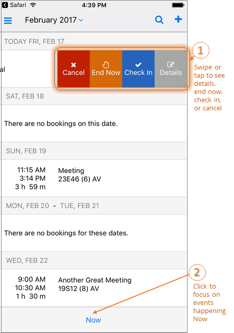

End a Meeting Early
If your meeting has taken less than the reserved time, you can End a meeting early to release the space for others.
You can End a Meeting early in one of two ways:
- From the Calendar on the Home page, locate the meeting you want to End Now.
- If you are able to End the meeting, an End Now option will appear when you swipe right. The meeting organizer or booking template usually determines whether this option is available.

- You can also End a meeting by opening and/or editing an event.
- Tap on the event and click Edit in the upper right-hand corner. Click End Now.
See Also: Invite People